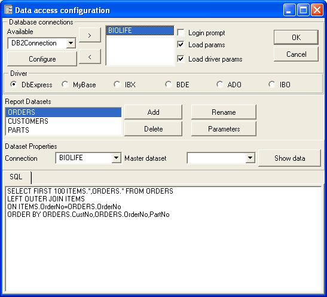
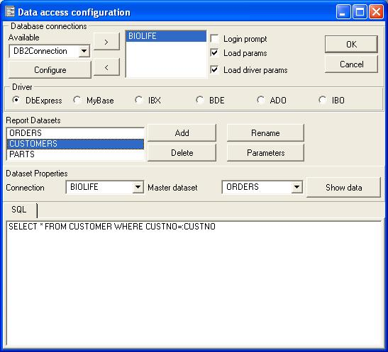

A subreport can have only a main dataset, but you can open as many datasets as you want, and you can link this datasets to the main dataset or to other dataset linked to the main dataset.
For example:
To link a dataset with another dataset you must select the property Master Dataset. A linked dataset must have parameters, the name of the parameters must be the same as the field names of the linked dataset.
Here is a sample:


Note: With the BDE driver you can link Tables by selecting the correct IndexFields and Master Fields properties like you do in Delphi or Builder.